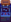

Banda sonora
| Articulo Incompleto
Este articulo está incompleto y le falta información. Puedes ayudar a Stardew Valley Wiki ampliando información! |

La banda sonora de Stardew Valley es compuesta por ConcernedApe. Está disponible en Steam en idiomas selectos y a través de la tienda oficial de mercancia. También está disponible a través de múltiples plataformas de música digital, cortesía de ConcernedApe.
La banda sonora original incluía 70 canciones.
Canciones agregadas a la banda sonora:
- Cuatro canciones de la v1.1 del juego se incluyeron en noviembre de 2017
- Tres canciones de la v1.3 en agosto de 2018
- Catorce canciones de la v1.4 en noviembre de 2019
- Nueve canciones de la v1.5 en diciembre de 2020
El jugador puede usar un Mini caja de música en la granja, cualquier interior de un, o la cueva para reproducir continuamente la música de su elección. Sólo se pueden seleccionar pistas que se hayan escuchado antes.
Lista de pistas
Para obtener detalles sobre las condiciones de activación, consulte la sección siguiente. Para conocer las condiciones climáticas o estacionales de las escenas de una toma, consulte cada página relacionada. La columna «Ubicación/Escena de Corte» de la tabla no es definitiva ni exhaustiva. Por ejemplo, la banda sonora que se reproduce en Pueblo Pelícano depende de la dirección de entrada o salida, así como de dónde ingresó el jugador a Pueblo Pelícano.
| Pista | Título | Duración | Ubicación / Escena de Corte | Clima | Estación |
|---|---|---|---|---|---|
| 1 | Stardew Valley Overture | 02:26 | Pantalla de apertura | - | |
| 2 | Cloud Country | 01:30 | - | ||
| 3 | Grandpa's Theme | 01:02 | Escena inicial del abuelo Escena de evaluación del abuelo Escena de la cumbre |
- | |
| 4 | Settling In | 01:48 | Escena de encuentro con Robin y Lewis | - | |
| Luau (Mejor respuesta) | |||||
| 5 | Spring (It's A Big World Outside) | 03:56 | Bosque trasero • Parada de Autobús • Bosque Tizon • Granja • Montaña • Pueblo Pelícano (antes de las 12 P.M) | ||
| 6 | Spring (The Valley Comes Alive) | 04:22 | Bosque trasero • Parada de autobús • Bosque Tizon • Granja • Montaña • Pueblo Pelícano (antes de las 12 P.M) | ||
| 7 | Spring (Wild Horseradish Jam) | 04:05 | Bosque trasero • Parada de autobús • Bosque Tizon • Granja • Montaña • Pueblo Pelícano (antes de las 12 P.M) | ||
| 8 | Pelican Town | 02:17 | Pueblo Pelicano (antes de las 6 PM) | ||
|
Escena del Tablón de pedidos especiales
|
- | ||||
| 9 | Flower Dance | 00:30 | Festival de danza de las flores | ||
| 10 | Fun Festival | 01:57 | Búsqueda de huevos danza de las flores |
||
| Festival del hielo (Resultados del concurso de pesca en hielo) | |||||
| Ceremonia de reapertura del Centro Cívico (Pierre y Morris peleando) | - | ||||
| 11 | Distant Banjo | 01:54 | Clínica de Harvey | Viento |
|
| Cabaña de Leah |
Cualquiera | ||||
|
Escena de descubrimiento del Centro Cívico
|
- | ||||
| 12 | A Glimpse Of The Other World | 01:45 | Torre del Mago | Cualquiera | |
| 13 | Summer (Nature's Crescendo) | 03:28 | Bosque trasero • Parada de autobús • Bosque de Cindersap • Granja • Montaña • Pueblo Pelícano (antes de las 12 P.M) | ||
| 14 | Summer (The Sun Can Bend An Orange Sky) | 03:38 | Bosque trasero • Parada de autobús • Bosque de Cindersap • Granja • Montaña • Pueblo Pelícano (antes de las 12 P.M) | ||
| 15 | Summer (Tropicala) | 03:22 | Bosque trasero • Parada de autobús • Bosque de Cindersap • Granja • Montaña • Pueblo Pelícano (antes de las 12 P.M) | ||
| 16 | The Adventure Guild | 00:50 | El Gremio de Aventuras | Cualquiera | |
| 17 | The Stardrop Saloon | 01:23 | Salón Fruta Estelar | Cualquiera | |
| 18 | Luau Festival | 01:30 | Luau | ||
| 19 | Dance Of The Moonlight Jellies | 01:50 | Gelatinas de luz de luna | ||
| 20 | Fall (The Smell Of Mushroom) | 03:33 | Bosque trasero • Parada de autobús • Bosque Tizon • Granja • Montaña • Pueblo Pelícano (antes de las 12 P.M) | ||
| 21 | Fall (Ghost Synth) | 02:37 | Bosque trasero • Parada de autobús • Bosque Tizon • Granja • Montaña • Pueblo Pelícano (antes de las 12 P.M) | ||
| 22 | Fall (Raven's Descent) | 02:49 | Bosque trasero • Parada de autobús • Bosque Tizon • Granja • Montaña • Pueblo Pelícano (antes de las 12 P.M) | ||
| 23 | The Library And Museum | 01:48 | Museo | Cualquiera | |
| 24 | Stardew Valley Fair Theme | 01:53 | Feria de Stardew Valley | ||
| 25 | Festival Game | 00:52 | Búsqueda de Huevos, Juego de Tirachinas | Spring,Fall | |
| 26 | Spirit's Eve Festival | 02:05 | Víspera de los espíritus | ||
| Cualquiera | |||||
| 27 | Winter (Nocturne Of Ice) | 03:20 | Bosque trasero • Parada de autobús • Bosque Tizon • Granja • Montaña • Pueblo Pelícano • Ferrocarril (antes de las 12 P.M) | Cualquiera | |
| Cualquiera | |||||
| 28 | Winter (The Wind Can Be Still) | 02:50 | Bosque trasero, Parada de autobús, Bosque Tizon, Granja, Montaña, Pueblo Pelícano, Ferrocarril (antes de las 12 P.M) | Cualquiera | |
| 29 | Winter (Ancient) | 03:04 | Bosque trasero, Parada de autobús, Bosque Tizon, Granja, Montaña, Pueblo Pelícano, Ferrocarril (antes de las 12 P.M) | Cualquiera | |
| 30 | Winter Festival | 01:25 | Festival de Hielo, Fiesta de la estrella de invierno | ||
| 31 | A Golden Star Is Born | 01:56 | Centro comunitario (después de completar una habitación), Ceremonia de Reapertura del Centro Comunitario | - | |
| 32 | Country Shop | 01:04 | La Casa de Robin, la Tienda General de Pierre y el Rancho de Marnie | Cualquiera | |
| 33 | Calico Desert | 02:08 | Desierto de Calicó | Cualquiera | |
| 34 | Playful | 00:54 | El evento de 2 corazones de Alex, el evento de 4 corazones de Elliott, el evento de 7 corazones de Shane 2, el evento de 4 corazones de Sam, el evento de 6 corazones de Leah 2 | - | - |
| 35 | Buttercup Melody | 01:04 | Boda, evento de 4 corazones de Alex, evento de 4 corazones de Harvey, evento de 14 corazones de Haley, evento de 14 corazones de Maru, evento de 14 corazones de Penny | - | - |
| 36 | Pleasant Memory (Penny's Theme) | 01:00 | El evento de 2 corazones de Elliott, el evento de 2 corazones de Haley, el evento de 10 corazones de Leah, el evento de 8 corazones de Haley, el evento de 10 corazones de Elliott, el evento de 10 corazones de Harvey, el evento de 4 corazones de Penny, el evento de 8 corazones de Penny | - | - |
| 37 | Piano Solo (Elliott's Theme) | 00:25 | El evento de 6 corazones de Elliott, el evento de 10 corazones de Elliott | - | - |
| 38 | Land Of Green And Gold (Leah's Theme) | 01:24 | El evento de 8 corazones de Elliott, el evento de 6 corazones de Sam, el evento de 2 corazones de Leah, el evento de 2 corazones de Maru, el evento de 14 corazones de Leaht | - | - |
| 39 | A Stillness in The Rain (Abigail's Melody) | 01:04 | Evento de 4 corazones de Abigail | - | - |
| 40 | Starwatcher (Maru's Theme) | 01:39 | El evento de los 10 corazones de Sebastian, el evento de los 6 corazones de Maru el evento de los 14 corazones de Maru | ||
| 41 | A Sad Song (Alex's Theme) | 00:56 | Evento de 4 corazones de Alex, evento de 3 corazones de Clint, evento de 3 corazones de Sam, evento de 4 corazones de Leah, evento de 6 corazones de Haley, evento de 10 corazones de Abigail | - | - |
| 42 | Pickle Jar Rag (Haley's Theme) | 01:05 | Evento de 4 corazones de Haley Evento de 10 corazones de Pierre, Evento de 7 corazones de Shane 2, Evento de 14 corazones de Haley | - | - |
| 43 | Echos (Sebastian's Theme) | 00:43 | Evento de 14 corazones de Abigail, evento de 8 corazones de Sebastian, evento de 4 corazones de Sebastian, evento de 2 corazones de Shane, evento de 6 corazones de Shane, evento de 10 corazones de Maru, evento de 6 corazones de Abigail, evento de 8 corazones de Abigail, 10 de Penny evento del corazón | - | - |
| 44 | Grapefruit Sky (Dr. Harvey's Theme) | 01:14 | Evento de 10 corazones de Maru, evento de 8 corazones de Harvey, evento de 14 corazones de Harvey | - | - |
| 45 | Alex's Keepsake | 00:41 | Evento Alex 8 corazones | - | - |
| 46 | Band Practice | 00:15 | Evento de 2 corazones de Sam | - | - |
| 47 | Sam's Band (Electronic Version) | 01:03 | El evento de los 8 corazones de Sam | - | - |
| 48 | Sam's Band (Pop Version) | 01:04 | El evento de los 8 corazones de Sam | - | - |
| 49 | Sam's Band (Bluegrass Version) | 01:02 | El evento de los 8 corazones de Sam | - | - |
| 50 | Sam's Band (Heavy Version) | 01:01 | El evento de los 8 corazones de Sam | - | - |
| 51 | A Dark Corner Of The Past | 00:37 | Evento de 6 corazones de George, evento de 5 corazones de Alex, evento 2 de 7 corazones de Shane, evento de 10 corazones de Abigail | - | - |
| 52 | Music Box Song | 01:14 | El evento de 10 corazones de Alex, el evento de 10 corazones de Sam, el evento de 10 corazones de Haley, el evento de 8 corazones de Maru, el evento de 10 corazones de Harvey, el evento de 6 corazones de Penny | - | - |
| 53 | Jaunty | 00:54 | Evento de 6 corazones de Alex, evento de 6 corazones de Sebastian, evento de 2 corazones de Harvey | - | - |
| 54 | Violin Solo | 00:23 | El evento de los 10 corazones de Alex | - | - |
| 55 | Wedding Celebration | 00:39 | Boda | Boda | |
| 56 | Mines (Crystal Bells) | 02:52 | Niveles de hierba, evento de Sebastian 6 corazones, Junimo Kart | Cualquiera | |
| 57 | Mines (A Flicker in The Deep) | 01:25 | Niveles de hierba, Junimo Kart | Cualquiera | |
| 58 | Mines (Star Lumpy) | 01:44 | Niveles de hierba, Junimo Kart | Cualquiera | |
| 59 | Mines (Icicles) | 01:41 | Niveles de hielo, Junimo Kart | Cualquiera | |
| 60 | Mines (Marimba Of Frozen Bones) | 01:54 | Niveles de hielo, Junimo Kart | Cualquiera | |
| 61 | Mines (Cloth) | 01:46 | Niveles de hielo, Junimo Kart | Cualquiera | |
| 62 | Mines (Visitor To The Unknown) | 02:08 | Niveles de lava, Junimo Kart | Cualquiera | |
| 63 | Mines (The Lava Dwellers) | 02:59 | Niveles de lava | Cualquiera | |
| 64 | Mines (Magical Shoes) | 01:47 | Niveles de lava | Cualquiera | |
| 65 | Mines (Danger!) | 01:52 | Niveles de lava | Cualquiera | |
| 66 | In The Deep Woods | 02:06 | Bosque secreto | Cualquiera | |
| 67 | Journey Of The Prairie King (Overworld) | 01:44 | Niveles sin jefe, el evento de 2 corazones de Abigail | Cualquiera | |
| 68 | Journey Of The Prairie King (The Outlaw) | 01:06 | Batallas de jefes | Cualquiera | |
| 69 | Journey Of The Prairie King (Final Boss & Ending) | 01:23 | Jefe final y el Fin | Cualquiera | |
| 70 | Load Game | 01:52 | Cargando una pantalla de personaje | - | - |
| 71 | Frozen Pizza And Eggs (Shane's Theme) [2] | 01:14 | El evento de los 4 corazones de Shane, el evento de los 7 corazones de Shane | - | - |
| 72 | Dreamscape [2] | 01:02 | Evento de 2 corazones de Emily | - | - |
| 73 | Song Of Feathers (Emily's Theme) [2] | 02:56 | El evento de los 4 corazones de Emily, el evento de los 8 corazones de Emily, el evento de los 14 corazones de Emily | - | - |
| 74 | Emily's Dance [2] | 01:02 | El evento de los 6 corazones de Emily | - | - |
| 75 | Night Market [3] | 02:11 | Mercado nocturno en Playa (invierno 15-17, 5:00 P.M. a 2:00 A.M.) | ||
| 76 | Submarine Theme [3] | 02:07 | Submarino en Mercado Nocturno | ||
| 77 | Mermaid Song [3] | 01:09 | Espectáculo de Sirenas en el Mercado nocturno | ||
| 78 | Sun Room (Alone with Relaxing Tea) [4] | 01:44 | Terraza Acristalada | Cualquiera | |
| 79 | Grapefruit Sky (Pasta Primavera Mix) [4] | 01:26 | Evento de 14 corazones de Harvey | - | - |
| 80 | The Happy Junimo Show Theme [4] | 00:46 | El evento de 14 corazones de Sam | - | - |
| 81 | Movie Theater [4] | 01:46 | Cine por Dentro | - | - |
| 82 | Crane Game [4] | 00:30 | Juego de grúa en cine | - | - |
| 83 | Wumbus (Movie Theme) [4] | 00:51 | Cualquiera | ||
| 84 | Exploring Our Vibrant World (Movie Theme) [4] | 01:38 | Cualquiera | ||
| 85 | The Zuzu City Express (Movie Theme) [4] | 00:33 | Cualquiera | ||
| 86 | Movie Theater (Closing Time) [4] | 00:56 | El Cine (Hora de cierre después de ver una película) | - | - |
| 87 | JunimoKart (Title Theme) [4] | 01:39 |  Junimo Kart | Cualquiera | |
| 88 | JunimoKart (The Gem Sea Giant) [4] | 02:03 | JunimoKart (El gigante mar de gema) | Cualquiera | |
| 89 | JunimoKart (Slomp's Stomp) [4] | 01:20 | Junimo Kart (El pisotón de Slomp) | Cualquiera | |
| 90 | JunimoKart (Ghastly Galleon) [4] | 02:34 | Junimo Kart (Galeón espantoso) | Cualquiera | |
| 91 | JunimoKart (Glowshroom Grotto) [4] | 02:06 | Junimo Kart (Gruta de la seta luminosa) | Cualquiera | |
| 92 | Ginger Island [5] | 02:40 | Isla jengibre (antes de las 12 P.M) | Cualquiera | |
| 93 | Professor Snail's Radio [5] | 01:29 | Oficina de campo de la isla | ||
| 94 | Volcano Mines (Molten Jelly) [5] | 02:47 | Minas de Volcán Niveles 1-5 | Cualquiera | |
| 95 | Volcano Mines (Forgotten World) [5] | 02:51 | Minas de Volcán Niveles 6-9 | Cualquiera | |
| 96 | Mystery Of The Caldera [5] | 01:19 | Forge (Minas de Volcán Nivel 10) | Cualquiera | |
| 97 | The Gourmand's Cave [5] | 00:42 | La Cueva de la Rana Golosa (Isla Oeste) | Cualquiera | |
| 98 | Pirate Theme [5] | 01:04 | Cueva del pirata (Isla sureste, cuando está poblada) | ||
| 99 | Leo's Song [5] | 01:41 | Encuentro con Leo en la escena de corte | Cualquiera | |
| 100 | Summit Celebration [5] | 03:00 | Evento cumbre | - | |